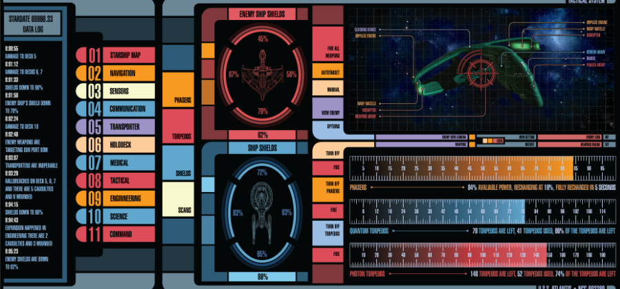
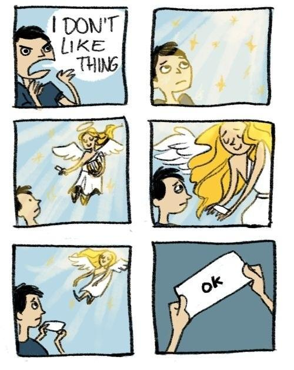

|
This is the Interface Master List. It is a collection of games, known as "interface dramas" which use user interfaces to tell immersive stories.
Don't see a game that you think should be on the list?
Submit a new interface drama here.
Submitted a game and are waiting?
Check out the Interface Drama Master List Queue.
Please take a look at the FAQ before submitting. I'm still smoothing out rough edges on documenting this genre, so info here will be regularly updated.
Frequently Asked Questions
What are interface dramas?
Interface dramas, also known as inbox games, desktop simulators, ui games, or interface fictions are a small but growing form of game where a user interface is used to tell an immersive story. Though this list was initially inspired by a talk mabbees and I gave in December 2022, we are not the first people to talk about or define this type of genre.
- Inbox Games: Poetics and Authoring Support by Chris Martens and Robert J. Simmons in 2021 at the International Conference on Interactive Digital Storytelling (ICIDS) (talk | paper)
- Fantasy Filing Systems by Lee Tusman in July 2022 at Narrascope (slides | list)
- Old Interfaces, New Stories by Katherine Morayati & Ian Michael Waddell in August 2022 through Interactive Fiction Technology Foundation (video | slides)
What are the criteria for an interface drama?
Game must be first-person. The game must feature a primary first-person view of an interface, as if the player themselves is interacting with the interface.
Game must have a story aspect, or drama. The drama aspect of interface drama comes from the theatrical definition of drama, as in, "a composition in verse or prose intended to portray life or character to tell a story." There is a story, and the interface or characters within the game responds to the player to further the story.
Game must have recognizeable elements of a user interface (UI). These include but are not limited to:
- text fields
- buttons
- toggles
- dropdowns
- scrollbars
- icons and tooltips
- progress bars
- modal windows
- command lines
Please see this page for more examples of UI elements. The game can be inspired by pre-existing user interfaces (IRC, Windows XP, iOS) or can be an entirely new speculative interface.
The LCARS system from Star Trek is a speculative UI; see GMUNK or Ash Thorp's work for more speculative UI examples in movies.

The UI must be used as a gameplay mechanic in a majority of the game. For example, the classic adventure game Myst features points where the character must interact with an interface for a puzzle, but the main navigation of the game is done by walking around the island, so Myst is not an interface drama.
Secret Little Haven's UI features as a main gameplay mechanic. If a player wishes to stop playing a mini-game, they must navigate away from it; there is no way to "walk" away from the screen. This is a good example of an interface drama.
Can an interface drama be analogue?
I personally have yet to see an analogue interface drama, but if it fits the criteria above, yes, it could be considered an interface drama. If you know of any analogue interface dramas, please submit them!
How do I submit a game?
Please submit using the form here. You need the following:
- Game title
- Short game description (150 words or less)
- Link to full game or demo on itch.io, Steam page or website
- Tags that describe the game
- If you are the developer: A 460x215 promotional image with your game's logo displayed visibly
I reserve the right to reject games whose sites/files have degraded to the point they are unplayable. These can be logged as historical artifacts, but the point of the list is to serve as a playable list of interface dramas.
Once I get your submission, I'll put it in the submission queue. In full transparency, you can see updates to the games, what has been added to the list, what has not been added to the list, and why. If you have questions or wish to have a discussion about the decision, please get in touch at illuminesce @ pm.me.
Who can submit to the interface drama list?
Anyone can submit a game, though if you are not the original author of the game, please indicate this on the submission form so I can check with the original author that I've tagged their work properly.
Why are you making this list? Why do you think your name is better?
I'm a designer and artist, which means I am an interloper to current academic discussions of interface drama vs. interactive fiction vs. narrative fiction. I am not so brazen to suggest I "discovered" this genre: my work stands on the shoulders of academics and other artists.
I have 10+ years of professional experience in interface design, so I know what interfaces are supposed to do and what interfaces look like when they are broken. I'm particularly interested in interface dramas because they purposely break social constructs around what interfaces should be to tell unique and interesting stories, sometimes from radical, underground and queer voices.
This is the reason why I started playing interface dramas, and why I made my own interface drama called Terranova.
As for the name, I think it is descriptive of both what the genre looks like (interface) and what function the genre performs—that is, to tell stories, to entertain, and to make the player think (drama). It can be abbreviated as "ID" in the games world, which differentiates it from "IF" (interactive fiction), or text-based and text-input based game.
Since my background is in interface design (specifically digital) and storytelling as an artist, my bias is towards games that tell personal stories and use interfaces in unexpected ways. I recognize my definition will not always match the definition of others; but this in no way negates the passion we share to shed a light on these unique games.
Some other adjacent/overlapping genres to interface dramas
As I've been exposed to other interesting perspectives on the genre, I've understood interface dramas to exist amongst other genres. Here's some I've discovered so far. If you have something to suggest here, please get in contact with me.
- inbox games like Digital a Love Story and A Normal Lost Phone
- epistolary games like Neurocracy and Her Story
- interface puzzlers like Last Call BBS and TIS-100
I don't like interface dramas. They're not even games.

(Thanks to @joscribbles for summing up my feelings.)
CJ is a designer and indie dev. They write as a hobby. If you like this article, why not say hello in an email or buy them a coffee to support their work?